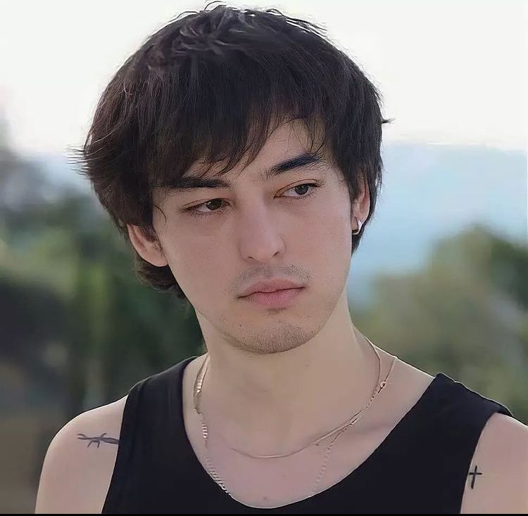

George Kusunoki Miller es un cantante, productor y compositor de música R&B que comenzó su carrera musical
formalmente en 2017 y que desde entonces se ha ganado el cariño y apoyo de un gran número de personas.
A pesar de haber nacido en Osaka, Japón y hablar japonés, su repertorio de canciones y proyectos discográficos son todos en inglés.
Actualmente vive en Manhattan, Nueva York, Estados Unidos. Antes de dedicarse a la música y ser conocido
como Joji , era conocido por The Filthy Frank Show y también por su personaje "Pink Guy" para dicho show
de comedia que se subía en YouTube. Llegó a sacar una gran cantidad de canciones bajo el pseudónimo de
"Pink Guy"; sin embargo, estas no eran para nada serias.
Otra cosa que se le atribuye a George es el haber creado la tendencia del "Harlem Shake", un fenómeno viral
de 2013. Fue el primero en subir un vídeo de la canción titulado "DO THE HARLEM SHAKE (ORIGINAL)" que
rápidamente llamó la atención de muchos usuarios que decidieron hacer sus propias versiones del vídeo.
Biografía
Kusunoki Miller nació el 16 de septiembre de 1993, en Osaka, Japón. Asistió a la Academia Canadiense, en Kobe, Japón, donde se graduó en 2012. A los 18 años, dejó Japón y viajó a los Estados Unidos. Es de ascendencia
japonesa por parte de su madre y australiana por parte de su padre. Miller intentó mantener su privacidad,
como por ejemplo borrando el video "Filthy Frank Exposes Himself?", en el que se reveló como estudiante
universitario en Brooklyn, Nueva York, y que no quería revelar información personal por temor a no poder
conseguir un trabajo más adelante debido a la naturaleza de su programa.

Trayectoria musical
A pesar de que Miller decidió hacer música permanentemente bajo el alias de "Joji" en 2017, lo cierto es que
lleva mucho más tiempo en internet y haciendo de las suyas, pues su primer contacto con YouTube fue en 2006,
apenas un año después de que la plataforma fue creada.
Cuando todavía continuaba con "The Filthy Frank Show", lanzó varias canciones bajo el pseudónimo de "Pink
Guy", pero la seriedad brillaba por su ausencia en ellas.
Sus primeras canciones lanzadas con el nombre de Joji fueron "Thom" y "You Suck Charlie", ambas lanzadas a
finales de 2015. Estas fueron publicadas bajo un falso alias, pero sus seguidores no tardaron en darse cuenta
que estas canciones eran de Miller. Finalmente en 2017 lanzó "I don’t wanna waste my time", "Rain on me" y
"Will He", mismo año en el que lanzó su primer EP bajo el alias de Joji titulado "In Tongues", que alcanzó el
puesto 58 en el Billboard 200.
En 2018 lanzó su álbum debut titulado "BALLADS 1" que incluye 12 canciones entre las que podemos
mencionar "Test drive", "Attention", "Yeah right" y su canción más escuchada hasta el momento "Slow dancing
in the dark". Este álbum alcanzó la posición número uno en la lista de música R&B y Hip-Hop de Billboard.
El siguiente año lanzó "Lost Ballads", un proyecto que consta de tres canciones que no fueron incluidas en su
álbum debut. En 2020 fue publicado su segundo álbum "Nectar" que consta de 18 canciones y que gozó de un
buen recibimiento por parte de los fans y buenos puestos en las listas de charts de Billboard. Entre algunas
canciones incluidas en este álbum podemos mencionar "Tick Tock", "Daylight" con Diplo, "Run", "Gimme love"
y "Like you do".
Curiosidades de Joji
El alias de «Joji» se debe a cómo se pronuncia su nombre en japonés: ジョージ・楠木・ミラ (Jōji Kusunoki Mirā).
Fue el creador de la tendencia del Harlem Shake en 2013 y 2014.
Nació en Japón y habla en japonés, pero todas sus canciones son cantadas en inglés.
Es de descendencia japonesa y australiana.
Vivió en Japón hasta los 18 años, luego se mudó a Estados Unidos.